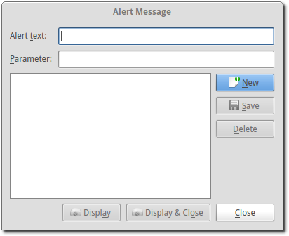

Alert
From time to time it may be necessary to display a small unobtrusive message to the congregation. In OpenLP this is known as an Alert. Examples could be a car with the headlights left on, a parent needed in nursery, or anything else somebody may need notified about. This is easily accomplished using the Alert, which is accessible from the top Menu under .
- Alert text:
- Enter the message you want displayed in this box.
- Parameter:
- This box is used for words you want to insert into the alert text.
You will add the Parameter text into the alert text using “<>” (without quotations). Anywhere in the Alert text that you add these two symbols, <> side by side, will insert any text you have in the parameter box into the Alert message.
Example of Use
Alert text: The owner of the vehicle with license plate number <> your lights are on.
Parameter: HNN432
These two settings will display like this:
The owner of the vehicle with the license plate number HNN432 your lights are on.
If you use the same alerts on a regular basis, Save your Alert and you will have access to the alert with a click of the mouse. You may also click on New to make a new alert or Delete an alert you do not need.
When you are ready to Display your Alert you have two options. Clicking on Display will display the Alert and the Alert Message window will remain open. Clicking Display & Close will display the alert and close the Alert Message window.
All details of the display, font, color, size and position are adjusted from the top Menu item , Alert tab and the instructions here. Configuring OpenLP
Please note: Alert Message is a Plugin that needs to be Active in the Plugin List for use.